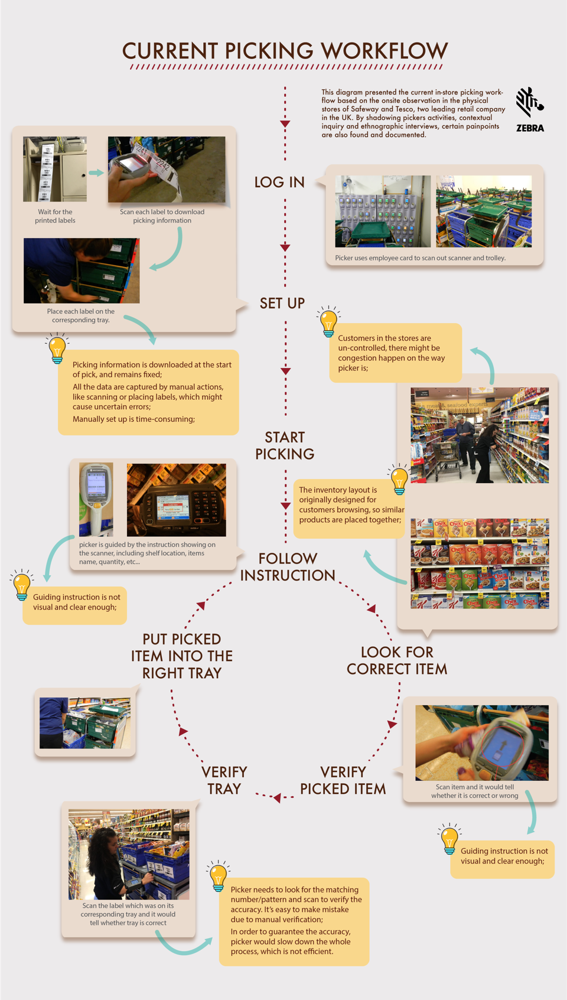

#Research #2017 Summer Internship
Propose the future “in-store picking” experience and explore the opportunity space for Zebra.
In-store picking is a step of fulfilling e-commerce orders in a brick-and-mortar store. It consists in taking and collecting articles in a specified quantity directly from a store shelf rather than its warehouse or distribution center.
From fulfillment in Distribution Centers turns to Stores, picking environment is the most biggest change, (details would be covered below). If retailers has a better way to organize the way of picking, the whole efficiency could be highly improved. So in this project, I mainly focused on the process of picking.
